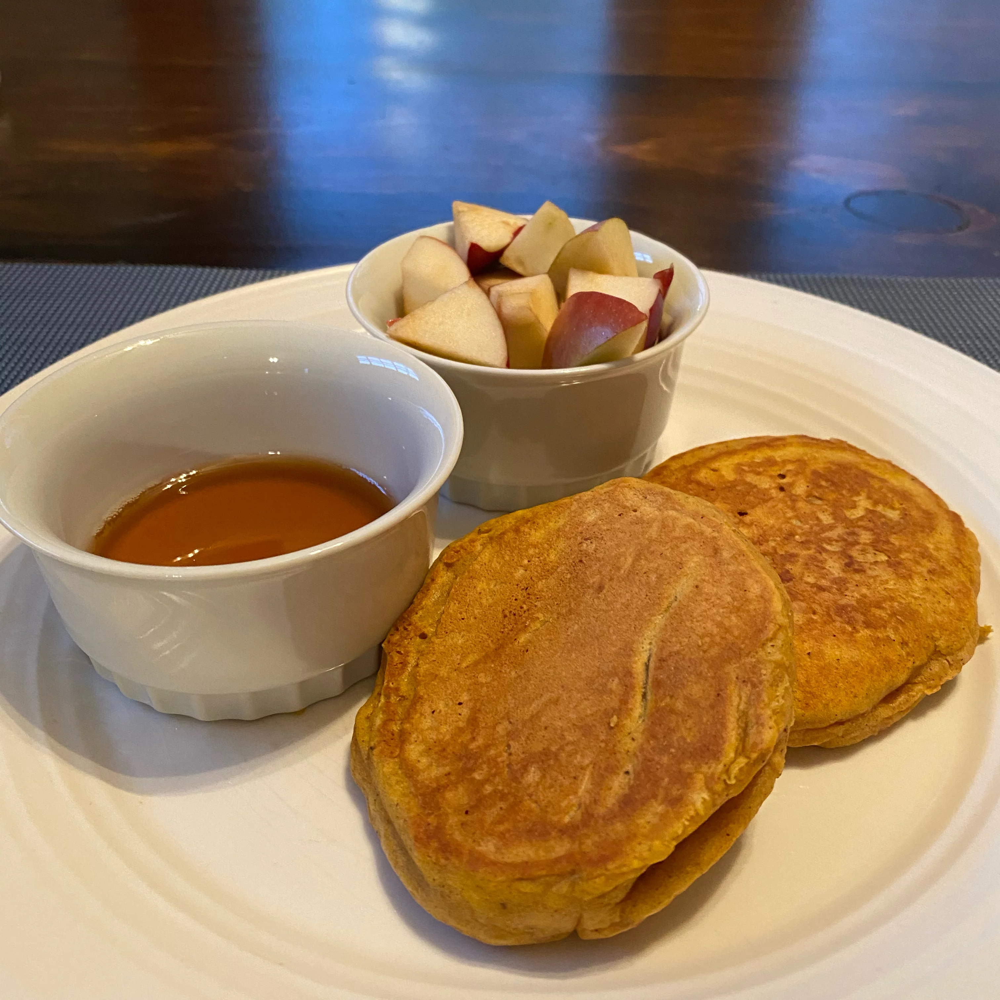

Pumpkin Pancakes

Description
These are good any season but taste best on cold winter mornings. You can use canned or cooked fresh pumpkin.
Ingredients
- 1 1/2 cups milk
- 1 cup pumpkin puree
- 1 egg
- 2 tablespoons vegtable oil
- 2 tablespoons vinegar
- 2 cups all-porpose flour
- 3 tablespoons brown sugar
- 2 teaspoons baking powder
- 1 teaspoon baking soda
- 1 teaspoon ground allspice
- 1 teaspoon ground cinnamon
- 1/2 teaspoon ground ginger
- 1/2 teaspoon salt
Steps
- In a bowl, mix together the milk, pumpkin, egg, oil and vinegar. Combine the flour, brown sugar, baking powder, baking soda, allspice, cinnamon, ginger and salt in a separate bowl. Stir into the pumpkin mixture just enough to combine.
- Heat a lightly oiled griddle or frying pan over medium high heat. Pour or scoop the batter onto the griddle, using approximately 1/4 cup for each pancake. Brown on both sides and serve hot.